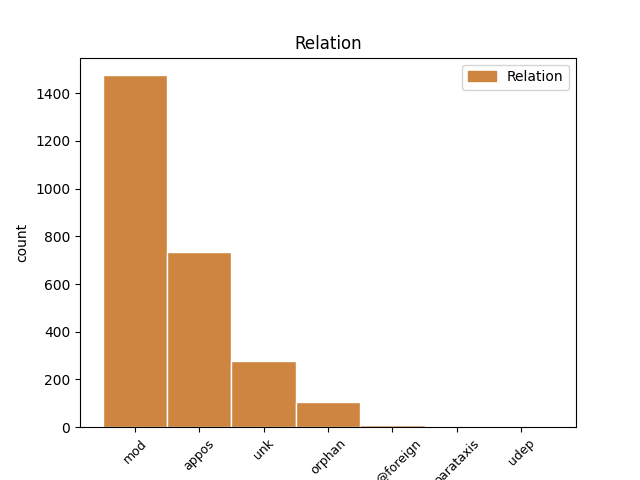
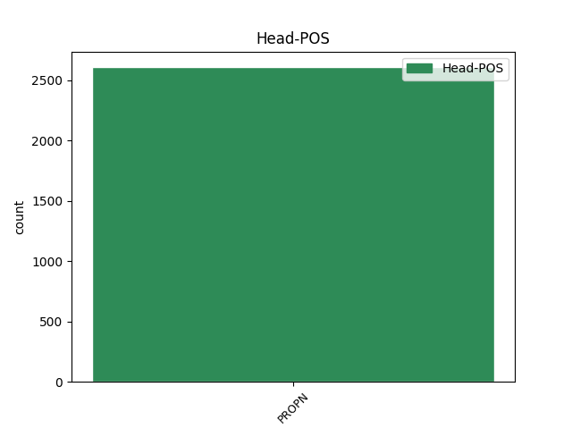
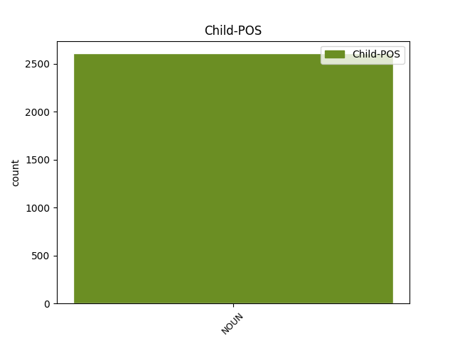

Distribution of features within this leaf



Agreement Rules sorted by frequency.
- When the dependent token is the modifer(mod) of the head token, and the head token is PROPN and the dependent token is NOUN.
1 Za _ _ _ _ 0 _ _ _
2 cenné _ _ _ _ 0 _ _ _
3 připomínky _ _ _ _ 0 _ _ _
4 k _ _ _ _ 0 _ _ _
5 rukopisu _ _ _ _ 0 _ _ _
6 děkujeme _ _ _ _ 0 _ _ _
7 RNDr _ _ _ _ 0 _ _ _
8 . _ _ _ _ 0 _ _ _
9 V V PROPN NNMXX-----A---8 Abbr=Yes|Animacy=Anim|Gender=Masc|NameType=Giv|Polarity=Pos 0 _ _ _
10 . _ _ _ _ 0 _ _ _
11 Pyšweytzovi _ _ _ _ 0 _ _ _
12 , _ _ _ _ 0 _ _ _
13 DrSc DrSc NOUN NNMXX-----A---8 Abbr=Yes|Animacy=Anim|Gender=Masc|Polarity=Pos 9 mod _ LGloss=(doktor_věd)|LId=DrSc-1|SpaceAfter=No
14 . _ _ _ _ 0 _ _ _
15 , _ _ _ _ 0 _ _ _
16 našemu _ _ _ _ 0 _ _ _
17 přednímu _ _ _ _ 0 _ _ _
18 odborníkovi _ _ _ _ 0 _ _ _
19 na _ _ _ _ 0 _ _ _
20 žábronožky _ _ _ _ 0 _ _ _
21 ( _ _ _ _ 0 _ _ _
22 Anostraca _ _ _ _ 0 _ _ _
23 ) _ _ _ _ 0 _ _ _
24 . _ _ _ _ 0 _ _ _
1 Při _ _ _ _ 0 _ _ _
2 ropných _ _ _ _ 0 _ _ _
3 vrtech _ _ _ _ 0 _ _ _
4 v _ _ _ _ 0 _ _ _
5 oblasti _ _ _ _ 0 _ _ _
6 severního _ _ _ _ 0 _ _ _
7 Yucatanu _ _ _ _ 0 _ _ _
8 v _ _ _ _ 0 _ _ _
9 Mexiku _ _ _ _ 0 _ _ _
10 nalezl _ _ _ _ 0 _ _ _
11 již _ _ _ _ 0 _ _ _
12 r _ _ _ _ 0 _ _ _
13 . _ _ _ _ 0 _ _ _
14 1978 _ _ _ _ 0 _ _ _
15 geolog _ _ _ _ 0 _ _ _
16 Glen _ _ _ _ 0 _ _ _
17 Penfield _ _ _ _ 0 _ _ _
18 zřetelné _ _ _ _ 0 _ _ _
19 důkazy _ _ _ _ 0 _ _ _
20 o _ _ _ _ 0 _ _ _
21 horninách _ _ _ _ 0 _ _ _
22 vystavených _ _ _ _ 0 _ _ _
23 enormním _ _ _ _ 0 _ _ _
24 tlakům _ _ _ _ 0 _ _ _
25 a _ _ _ _ 0 _ _ _
26 odhalil _ _ _ _ 0 _ _ _
27 tak _ _ _ _ 0 _ _ _
28 zasypaný _ _ _ _ 0 _ _ _
29 a _ _ _ _ 0 _ _ _
30 zčásti _ _ _ _ 0 _ _ _
31 do _ _ _ _ 0 _ _ _
32 moře _ _ _ _ 0 _ _ _
33 ponořený _ _ _ _ 0 _ _ _
34 kráter _ _ _ _ 0 _ _ _
35 Chicxulub Chicxulub PROPN NNIS1-----A---- Animacy=Inan|Case=Nom|Gender=Masc|NameType=Geo|Number=Sing|Polarity=Pos 0 _ _ _
36 ( _ _ _ _ 0 _ _ _
37 v _ _ _ _ 0 _ _ _
38 překladu _ _ _ _ 0 _ _ _
39 " _ _ _ _ 0 _ _ _
40 Ďáblovy _ _ _ _ 0 _ _ _
41 rohy roh NOUN NNIP1-----A---- Animacy=Inan|Case=Nom|Gender=Masc|Number=Plur|Polarity=Pos 35 appos _ SpaceAfter=No
42 " _ _ _ _ 0 _ _ _
43 ) _ _ _ _ 0 _ _ _
44 o _ _ _ _ 0 _ _ _
45 hloubce _ _ _ _ 0 _ _ _
46 až _ _ _ _ 0 _ _ _
47 9 _ _ _ _ 0 _ _ _
48 km _ _ _ _ 0 _ _ _
49 a _ _ _ _ 0 _ _ _
50 průměru _ _ _ _ 0 _ _ _
51 200 _ _ _ _ 0 _ _ _
52 km _ _ _ _ 0 _ _ _
53 . _ _ _ _ 0 _ _ _
1 Václav Václav PROPN NNMS1-----A---- Animacy=Anim|Case=Nom|Gender=Masc|NameType=Giv|Number=Sing|Polarity=Pos 0 _ _ _
2 Klaus _ _ _ _ 0 _ _ _
3 , _ _ _ _ 0 _ _ _
4 Český _ _ _ _ 0 _ _ _
5 deník deník NOUN NNIS1-----A---- Animacy=Inan|Case=Nom|Gender=Masc|Number=Sing|Polarity=Pos 1 unk _ SpaceAfter=No
6 , _ _ _ _ 0 _ _ _
7 5 _ _ _ _ 0 _ _ _
8 . _ _ _ _ 0 _ _ _
9 2 _ _ _ _ 0 _ _ _
10 . _ _ _ _ 0 _ _ _
11 1993 _ _ _ _ 0 _ _ _
1 Z _ _ _ _ 0 _ _ _
2 jihoasijských _ _ _ _ 0 _ _ _
3 republik _ _ _ _ 0 _ _ _
4 bývalého _ _ _ _ 0 _ _ _
5 Sovětského _ _ _ _ 0 _ _ _
6 svazu _ _ _ _ 0 _ _ _
7 byla _ _ _ _ 0 _ _ _
8 dracunculosa _ _ _ _ 0 _ _ _
9 vytlačena _ _ _ _ 0 _ _ _
10 již _ _ _ _ 0 _ _ _
11 r _ _ _ _ 0 _ _ _
12 . _ _ _ _ 0 _ _ _
13 1930 _ _ _ _ 0 _ _ _
14 a _ _ _ _ 0 _ _ _
15 z _ _ _ _ 0 _ _ _
16 Iránu Irán PROPN NNIS2-----A---- Animacy=Inan|Case=Gen|Gender=Masc|NameType=Geo|Number=Sing|Polarity=Pos 0 _ _ _
17 např _ _ _ _ 0 _ _ _
18 . _ _ _ _ 0 _ _ _
19 r rok NOUN NNIXX-----A---8 Abbr=Yes|Animacy=Inan|Gender=Masc|Polarity=Pos 16 orphan _ SpaceAfter=No
20 . _ _ _ _ 0 _ _ _
21 1970 _ _ _ _ 0 _ _ _
22 . _ _ _ _ 0 _ _ _
1 Pramen pramen NOUN NNIS1-----A---- Animacy=Inan|Case=Nom|Gender=Masc|Number=Sing|Polarity=Pos 3 parataxis _ SpaceAfter=No
2 : _ _ _ _ 0 _ _ _
3 FSÚ FSÚ PROPN NNIXX-----A---8 Abbr=Yes|Animacy=Inan|Gender=Masc|NameType=Com|Polarity=Pos 0 _ _ _
1 Výkonný _ _ _ _ 0 _ _ _
2 výbor _ _ _ _ 0 _ _ _
3 SFŽ _ _ _ _ 0 _ _ _
4 dále _ _ _ _ 0 _ _ _
5 s _ _ _ _ 0 _ _ _
6 okamžitou _ _ _ _ 0 _ _ _
7 platností _ _ _ _ 0 _ _ _
8 pozastavil _ _ _ _ 0 _ _ _
9 delegaci _ _ _ _ 0 _ _ _
10 k _ _ _ _ 0 _ _ _
11 utkáním _ _ _ _ 0 _ _ _
12 na _ _ _ _ 0 _ _ _
13 všech _ _ _ _ 0 _ _ _
14 úrovních _ _ _ _ 0 _ _ _
15 soutěží _ _ _ _ 0 _ _ _
16 rozhodčím _ _ _ _ 0 _ _ _
17 , _ _ _ _ 0 _ _ _
18 kteří _ _ _ _ 0 _ _ _
19 byli _ _ _ _ 0 _ _ _
20 v _ _ _ _ 0 _ _ _
21 souvislosti _ _ _ _ 0 _ _ _
22 s _ _ _ _ 0 _ _ _
23 obviněními _ _ _ _ 0 _ _ _
24 sudího sudí NOUN NNMS2-----A---- Animacy=Anim|Case=Gen|Gender=Masc|Number=Sing|Polarity=Pos 25 udep _ _
25 Ruše Ruš PROPN NNMS2-----A---- Animacy=Anim|Case=Gen|Gender=Masc|NameType=Sur|Number=Sing|Polarity=Pos 0 _ _ _
26 jmenováni _ _ _ _ 0 _ _ _
27 v _ _ _ _ 0 _ _ _
28 deníku _ _ _ _ 0 _ _ _
29 Sport _ _ _ _ 0 _ _ _
30 dne _ _ _ _ 0 _ _ _
31 9 _ _ _ _ 0 _ _ _
32 . _ _ _ _ 0 _ _ _
33 července _ _ _ _ 0 _ _ _
34 - _ _ _ _ 0 _ _ _
35 tedy _ _ _ _ 0 _ _ _
36 Jindřichu _ _ _ _ 0 _ _ _
37 Hrčkovi _ _ _ _ 0 _ _ _
38 , _ _ _ _ 0 _ _ _
39 Jiřímu _ _ _ _ 0 _ _ _
40 Malinovskému _ _ _ _ 0 _ _ _
41 , _ _ _ _ 0 _ _ _
42 Josefu _ _ _ _ 0 _ _ _
43 Mudrovi _ _ _ _ 0 _ _ _
44 , _ _ _ _ 0 _ _ _
45 Petru _ _ _ _ 0 _ _ _
46 Slavíkovi _ _ _ _ 0 _ _ _
47 , _ _ _ _ 0 _ _ _
48 Petru _ _ _ _ 0 _ _ _
49 Wieckovi _ _ _ _ 0 _ _ _
50 , _ _ _ _ 0 _ _ _
51 Radimu _ _ _ _ 0 _ _ _
52 Závodnému _ _ _ _ 0 _ _ _
53 a _ _ _ _ 0 _ _ _
54 Františku _ _ _ _ 0 _ _ _
55 Prouskovi _ _ _ _ 0 _ _ _
56 , _ _ _ _ 0 _ _ _
57 jemuž _ _ _ _ 0 _ _ _
58 výkonný _ _ _ _ 0 _ _ _
59 výbor _ _ _ _ 0 _ _ _
60 zároveň _ _ _ _ 0 _ _ _
61 pozastavil _ _ _ _ 0 _ _ _
62 činnost _ _ _ _ 0 _ _ _
63 i _ _ _ _ 0 _ _ _
64 ve _ _ _ _ 0 _ _ _
65 funkci _ _ _ _ 0 _ _ _
66 delegáta _ _ _ _ 0 _ _ _
67 svazu _ _ _ _ 0 _ _ _
68 . _ _ _ _ 0 _ _ _
Disagree Examples:
1 Kontakt _ _ _ _ 0 _ _ _
2 : _ _ _ _ 0 _ _ _
3 British _ _ _ _ 0 _ _ _
4 Airways _ _ _ _ 0 _ _ _
5 , _ _ _ _ 0 _ _ _
6 Staroměstské _ _ _ _ 0 _ _ _
7 nám náměstí NOUN NNNXX-----A---8 Abbr=Yes|Gender=Neut|Polarity=Pos 15 mod _ SpaceAfter=No
8 . _ _ _ _ 0 _ _ _
9 10 _ _ _ _ 0 _ _ _
10 / _ _ _ _ 0 _ _ _
11 608 _ _ _ _ 0 _ _ _
12 , _ _ _ _ 0 _ _ _
13 110 _ _ _ _ 0 _ _ _
14 00 _ _ _ _ 0 _ _ _
15 Praha Praha PROPN NNFS1-----A---- Case=Nom|Gender=Fem|NameType=Geo|Number=Sing|Polarity=Pos 0 _ _ _
16 1 _ _ _ _ 0 _ _ _
17 , _ _ _ _ 0 _ _ _
18 tel _ _ _ _ 0 _ _ _
19 . _ _ _ _ 0 _ _ _
20 : _ _ _ _ 0 _ _ _
21 ( _ _ _ _ 0 _ _ _
22 02 _ _ _ _ 0 _ _ _
23 ) _ _ _ _ 0 _ _ _
24 231 _ _ _ _ 0 _ _ _
25 88 _ _ _ _ 0 _ _ _
26 89 _ _ _ _ 0 _ _ _
27 , _ _ _ _ 0 _ _ _
28 FAX _ _ _ _ 0 _ _ _
29 : _ _ _ _ 0 _ _ _
30 ( _ _ _ _ 0 _ _ _
31 02 _ _ _ _ 0 _ _ _
32 ) _ _ _ _ 0 _ _ _
33 232 _ _ _ _ 0 _ _ _
34 96 _ _ _ _ 0 _ _ _
35 15 _ _ _ _ 0 _ _ _
36 . _ _ _ _ 0 _ _ _
1 Kontakt _ _ _ _ 0 _ _ _
2 : _ _ _ _ 0 _ _ _
3 Norská _ _ _ _ 0 _ _ _
4 12 _ _ _ _ 0 _ _ _
5 , _ _ _ _ 0 _ _ _
6 101 _ _ _ _ 0 _ _ _
7 00 _ _ _ _ 0 _ _ _
8 Praha Praha PROPN NNFS1-----A---- Case=Nom|Gender=Fem|NameType=Geo|Number=Sing|Polarity=Pos 0 _ _ _
9 10 _ _ _ _ 0 _ _ _
10 , _ _ _ _ 0 _ _ _
11 tel telefon NOUN NNIXX-----A---8 Abbr=Yes|Animacy=Inan|Gender=Masc|Polarity=Pos 8 mod _ SpaceAfter=No
12 . _ _ _ _ 0 _ _ _
13 : _ _ _ _ 0 _ _ _
14 ( _ _ _ _ 0 _ _ _
15 02 _ _ _ _ 0 _ _ _
16 ) _ _ _ _ 0 _ _ _
17 73 _ _ _ _ 0 _ _ _
18 89 _ _ _ _ 0 _ _ _
19 59 _ _ _ _ 0 _ _ _
20 . _ _ _ _ 0 _ _ _
1 Kontakt _ _ _ _ 0 _ _ _
2 : _ _ _ _ 0 _ _ _
3 Pragoreal Pragoreal PROPN NNIS1-----A---- Animacy=Inan|Case=Nom|Gender=Masc|NameType=Com|Number=Sing|Polarity=Pos 0 _ _ _
4 , _ _ _ _ 0 _ _ _
5 spol společnost NOUN NNFXX-----A---8 Abbr=Yes|Gender=Fem|Polarity=Pos 3 mod _ SpaceAfter=No
6 . _ _ _ _ 0 _ _ _
7 s _ _ _ _ 0 _ _ _
8 r _ _ _ _ 0 _ _ _
9 . _ _ _ _ 0 _ _ _
10 o _ _ _ _ 0 _ _ _
11 . _ _ _ _ 0 _ _ _
12 , _ _ _ _ 0 _ _ _
13 Na _ _ _ _ 0 _ _ _
14 Rybníčku _ _ _ _ 0 _ _ _
15 10 _ _ _ _ 0 _ _ _
16 / _ _ _ _ 0 _ _ _
17 1365 _ _ _ _ 0 _ _ _
18 , _ _ _ _ 0 _ _ _
1 Výrobce _ _ _ _ 0 _ _ _
2 - _ _ _ _ 0 _ _ _
3 typ _ _ _ _ 0 _ _ _
4 : _ _ _ _ 0 _ _ _
5 HITACHI _ _ _ _ 0 _ _ _
6 HIFAX Hifax PROPN NNIS1-----A---- Animacy=Inan|Case=Nom|Gender=Masc|NameType=Pro|Number=Sing|Polarity=Pos 0 _ _ _
7 18 _ _ _ _ 0 _ _ _
8 M m NOUN NNNXX-----A---- Gender=Neut|Polarity=Pos 6 mod _ LGloss=(označení_pomocí_písmene)|LId=m-3
1 INHORGENTA Inhorgenta PROPN NNFS1-----A---- Case=Nom|Gender=Fem|NameType=Oth|Number=Sing|Polarity=Pos 0 _ _ _
2 München _ _ _ _ 0 _ _ _
3 - _ _ _ _ 0 _ _ _
4 21 _ _ _ _ 0 _ _ _
5 . _ _ _ _ 0 _ _ _
6 mezinárodní _ _ _ _ 0 _ _ _
7 odborný _ _ _ _ 0 _ _ _
8 veletrh veletrh NOUN NNIS1-----A---- Animacy=Inan|Case=Nom|Gender=Masc|Number=Sing|Polarity=Pos 1 appos _ _
9 hodin _ _ _ _ 0 _ _ _
10 , _ _ _ _ 0 _ _ _
11 bižuterie _ _ _ _ 0 _ _ _
12 , _ _ _ _ 0 _ _ _
13 drahých _ _ _ _ 0 _ _ _
14 kamenů _ _ _ _ 0 _ _ _
15 , _ _ _ _ 0 _ _ _
16 perel _ _ _ _ 0 _ _ _
17 , _ _ _ _ 0 _ _ _
18 stříbrného _ _ _ _ 0 _ _ _
19 zboží _ _ _ _ 0 _ _ _
20 a _ _ _ _ 0 _ _ _
21 zařízení _ _ _ _ 0 _ _ _
22 pro _ _ _ _ 0 _ _ _
23 jejich _ _ _ _ 0 _ _ _
24 zhotovení _ _ _ _ 0 _ _ _
25 : _ _ _ _ 0 _ _ _
26 4 _ _ _ _ 0 _ _ _
27 . _ _ _ _ 0 _ _ _
28 - _ _ _ _ 0 _ _ _
29 7 _ _ _ _ 0 _ _ _
30 . _ _ _ _ 0 _ _ _
31 2 _ _ _ _ 0 _ _ _
32 . _ _ _ _ 0 _ _ _